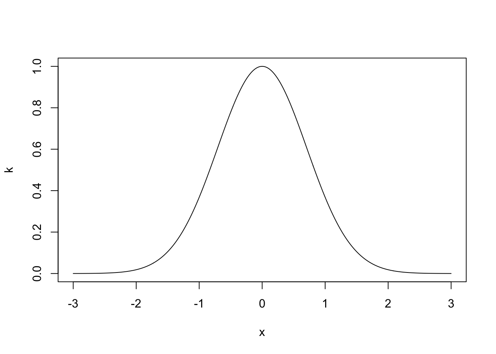
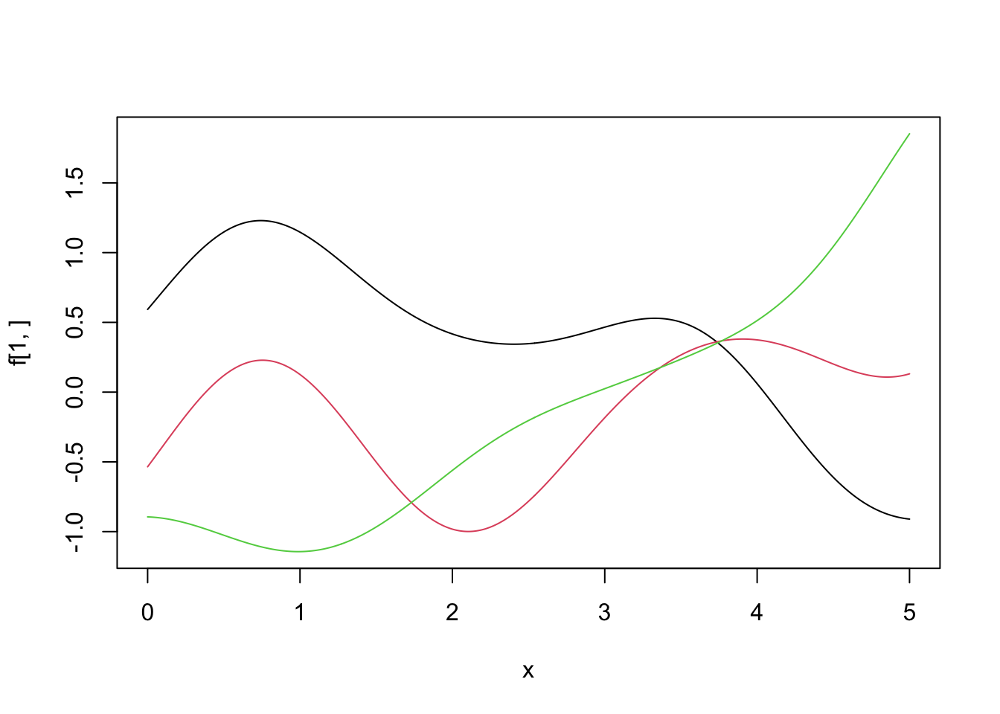
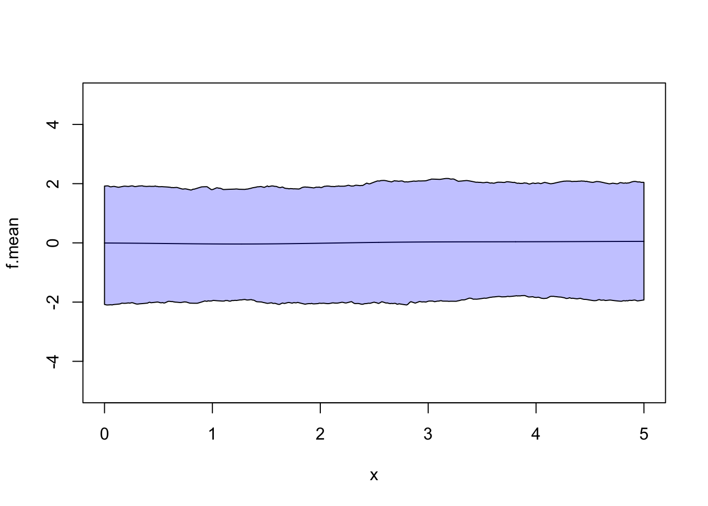

Chapter 6 Advanced Computation
Now we have the tools of Bayesian inference and methods to sample from complex posterior distributions, we can start to look at more advanced methods and models. This chapter is split into four distinct parts, each showing a different method in Bayesian inference.
6.1 Gaussian Processes
So far in the module, we have considered prior distribution on parameters. These parameters have taken values (mostly real) or real-valued vectors. In this section, we’re going to extend this idea further to place prior distributions on functions. That is, we’re going to describe a prior distribution that when sampled gives us functions. The method we’re going to use is called a Gaussian Process (GP).
Before, we define a GP, we’re going to build an intuitive definition of it. Recall the normal distribution with mean \(\mu\) and variance \(\sigma^2\), \(N(\mu, \sigma^2)\). It assigns probabilities to values on the real line – when we sample from it, we get real values. The plot below shows the density function for a \(N(0, 1)\) distribution and five samples.
#Plot N(0, 1)
x <- seq(-4, 4, 0.01)
y <- dnorm(x)
plot(x, y, type = 'l')
#Add samples
samples <- rnorm(5)
rug(samples)
The multivariate normal distribution extends this to a vector space, \(\mathbb{R}^N\). Instead of having a mean and variance value, the distribution is defined through a mean vector and covariance matrix. The mean vector describes the expected value of each component of the vector and the covariance matrix describes the relationship between each pair of components in the vector. When we draw samples, we get vectors. The plot below shows the density of the multivariate normal distribution with \(N = 2\), zero mean, \(\sigma^2_x = \sigma^2_y = 1\) and \(\rho = 0.7\).
#Create Grid
x <- seq(-3,3,length.out=100)
y <- seq(-3,3,length.out=100)
#Evaluate density at grid
z <- matrix(0,nrow=100,ncol=100)
mu <- c(0,0)
sigma <- matrix(c(1, 0.7, 0.7, 1),nrow=2)
for (i in 1:100) {
for (j in 1:100) {
z[i,j] <- mvtnorm::dmvnorm(c(x[i],y[j]),
mean=mu,sigma=sigma)
}
}
#Generate contour plot
contour(x, y ,z)
A GP takes this one step further and puts a prior distribution on a function space. It is specified by a mean function, \(\mu(\cdot)\) and covariance function \(k(\cdot, \cdot)\). The mean function describes the expected value of each point the function can be evaluated at, and the covariance function describes the relationship between each point on the function. The plot below shows three samples from a GP distribution with mean function the zero function \(\mu(x) = 0\, \forall x\) and a covariance function that supports smooth functions.

Definition 6.1 A Gaussian Process is a collection of random variables, any finite number of which have a joint Gaussian distribution.
This says that is we think of a function as an infinite collection of points, then if any finite subset of those points following a Gaussian distribution, we have a Gaussian process. In reality, we set up the function so that is meets this definition. More formally,
Definition 6.2 A GP distribution on a function \(f(x)\) is defined through its mean function \(\mu(x) = \mathbb{E}(x)\) and covariance function \(k(x, x') = \mathbb{E}(x)\left((f(x) - \mu(x))(f(x') - \mu(x'))\right)\). We write it as \(f(x) \sim \mathcal{GP}(\mu(x), k(x, x'))\).
Before we go any further, it is worth proceeding with caution. Those with good memories will recall Bernstein-von-Mises’ theorem from Chapter 3.
Theorem 6.1 (Bernstein-von-Mises) For a well-specified model \(\pi(\boldsymbol{y} \mid \theta)\) with a fixed number of parameters, and for a smooth prior distribution \(\pi(\theta)\) that is non-zero around the MLE \(\hat{\theta}\), then \[ \left|\left| \pi(\theta \mid \boldsymbol{y}) - N\left(\hat{\theta}, \frac{I(\hat{\theta})^{-1}}{n}\right) \right|\right|_{TV} \rightarrow 0. \]
Bernstein-von-Mises’ theorem only holds when the model has a fixed (i.e. finite) number of parameters. A GP is defined on an infinite collection of points, and so this theorem does not hold. This is the first time in this module we have encountered a distribution where Bernstein-von-Mises’ theorem does not hold. Fortunately, various forms of Bernstein-von-Mises’ theorems for GPs exist, with many coming about in the early 2010s. However, this is still an ongoing area of research.
6.1.1 Covariance Functions
One issue when using GPs is describing the covariance function. How do we decide how each pair of points (there being an infinite number of them)? There are lots of standard choices of covariance functions that we can choose from, each one making different assumptions about the function we are interested in.
The most common covariance function is the squared exponential functions. It is used to model functions that are ‘nice’, i.e. they are smooth, continuous and infinitely differentiable.
Definition 6.3 The squared exponential covariance function takes the form \[ k(x, x') = \alpha^2\exp\left\{-\frac{1}{l^2}(x-x')^2\right\}, \] where \(\alpha^2\) is the signal variance and \(l>0\) is the length scale parameter.
For now, consider \(\alpha = l = 1\). What is the covariance between the function evaluated at 0 and the function evaluated at \(x\)? The plot below shows the covariance.

The covariance is highest when the \(x\) is near to 0, i.e. the points are immediately next to each other. If the value of \(x\) is \(\pm 2\), the covariance is 0. As we are dealing with a joint normal distribution, a covariance of 0 implies independence. So with this covariance function, the value of \(f(x)\) is independent of \(f(0)\) if \(|x|\) is larger than about two. The parameter \(l\) is called the length scale parameter and dictates how quickly the covariance decays. Small values of \(l\) mean that the value of the function at nearby points are independent of each other, resulting in functions that look like white noise. Large values of \(l\) mean that even if points are far away, they are still highly dependent on each other. This gives very flat functions.
The choice of covariance function is a modelling choice – it depends completely on the data generating process you are trying to model. The following properties are useful when deciding which covariance function to use.
Definition 6.4 A stationary covariance function is a function of \(\boldsymbol{x} - \boldsymbol{x}'\). That means it is invariant to translations in space.
Definition 6.5 An isotropic covariance function is a function only of \(|\boldsymbol{x} - \boldsymbol{x}'|\). That means it is invariant to rigid translations in space.
Definition 6.6 An dot product covariance function is a function only of \(\boldsymbol{x}\cdot\boldsymbol{x}'\). That means it is invariant to rigid rotations in space, but not translations.
What is most important is that the matrix resulting from a covariance function is positive semi-definite. This is because covariance matrices must be positive semi-definite.
Definition 6.7 An \(N \times N\) matrix \(\Sigma\) is positive semi-definite if it is symmetric and \[ \boldsymbol{x}^T\Sigma\boldsymbol{x} \geq 0 \quad \hbox{for all } \boldsymbol{x} \in \mathbb{R}^N. \]
The squared exponential covariance function is isotropic and produces functions that are continuous and differentiable. There are many other types of covariance functions, including ones that don’t produce functions that are continuous or differentiable. Three4 more are given below.
Definition 6.8 The M'atern covariance function models functions that are differentiable only once: \[ k(x, x') = \left(1 + \frac{\sqrt{3}(x - x')^2}{l} \right)\exp\left\{-\frac{\sqrt{3}(x - x')^2}{l} \right\}. \]
Definition 6.9 The periodic covariance function models functions that are periodic and it is given by \[ k(x, x') = \alpha^2 \exp\left\{-\frac{2}{l}\sin^2\frac{(x-x')^2}{p} \right\}, \] where the period is \(p\).
Definition 6.10 The dot product covariance function models functions that are rotationally invariant and it is given by \[ k(x, x') = \alpha^2 + x\cdot x'. \]
These are just some covariance functions. In addition to the covariance functions defined, we can make new covariance funcitons by combining existing ones.
Proposition 6.1 If \(k_1\) and \(k_2\) are covariance functions, then so is \(k_1 + k_2\).
Proof. Let \(f_1\) be a function with covariance function \(k_1\) and \(f_2\) be a function with covariance function \(k_2\), then \(f = f_1 + f_2\) has covariance function \(k_1 + k_2\).
Proposition 6.2 If \(k_1\) and \(k_2\) are covariance functions, then so is \(k_1k_2\).
Proof. See problem sheet.
6.1.2 Gaussian Process Regression
One of the main applications of GPs in in regression. Suppose we observe the points below \(\boldsymbol{y} = \{y_1, \ldots, y_N\}\) and want to fit a curve through them. One method is to write down a set of functions of the form \(\boldsymbol{y} = X^T\boldsymbol{\beta} + \boldsymbol{\varepsilon}\), where \(X\) is the design matrix and \(\boldsymbol{\beta}\) a vector of parameters. For each design matrix \(X\), construct the posterior distributions for \(\boldsymbol{\beta}\) and use some goodness-of-fit measure to choose the most suitable design matrix.
One difficulty is writing down the design matrices \(X\), it is often not straightforward to propose or justify these forms GPs allow us to take a much less arbitrary approach, simply saying that \(y_i = f(x_i) + \varepsilon_i\) and placing a GP prior distribution on \(f\).
Although we’re placing an prior distribution with an infinite dimension on \(f\), we only ever need to work with a finite dimensional object, making this much easier. We only observe the function at finite number of points \(\boldsymbol{f} = \{f(x_1), \ldots, f(x_N)\}\) and we will infer the value of the function at points on a fine grid, \(\boldsymbol{f}^* = \{f(x_1^*), \ldots, f(x_N^*)\}\). By the definition of a GP, the distribution of these points is a multivariate normal distribution.
Example 6.1 Suppose we observe \(\boldsymbol{y} = \{y_1, \ldots, y_N\}\) at \(\boldsymbol{x} = \{x_1, \ldots, x_N\}\). The plot below shows these points.

Using the model \(y_i = f(x_i) + \varepsilon_i\), where \(\varepsilon_i \sim N(0, \sigma^2)\), we want to infer the function \(f\) evaluated at a gird of points \(\boldsymbol{f}^* = \{f(x_1^*), \ldots, f(x_N^*)\}\). We place a GP prior distribution on \(f \sim \mathcal{GP}(0, k)\), where \(k\) is the squared exponential covariance function. Using the model, the covariance between points \(y_i\) and \(y_j\) is \[ \textrm{cov}(y_i, y_j) = k(x_i, x_j) + \sigma^21_{i=j}. \] That is the covariance function evaluated at \(x_i\) and \(x_j\) plus \(\sigma^2\) if \(i = j\). We can write this in matrix form as \(K(\boldsymbol{x}, \boldsymbol{x}) + \sigma^2I\) where \(I\) is the identity matrix. The distribution of \(\boldsymbol{y}\) is therefore \(\boldsymbol{y} \sim N(\boldsymbol{0}, \, K(\boldsymbol{x}, \boldsymbol{x}) + \sigma^2I)\). By definition of the GP, the distribution of the function evaluated at the fine grid is \(\boldsymbol{f}^* \sim N(\boldsymbol{0}, K(\boldsymbol{x}^*, \boldsymbol{x}^*))\).
We can now write the joint distribution as \[ \begin{pmatrix} \boldsymbol{y} \\ \boldsymbol{f}^* \end{pmatrix} \sim N\left(\boldsymbol{0}, \, \begin{pmatrix} K(\boldsymbol{x}, \boldsymbol{x}) + \sigma^2I & K(\boldsymbol{x}, \boldsymbol{x}^*)\\ K(\boldsymbol{x}^*, \boldsymbol{x}) & K(\boldsymbol{x}^*, \boldsymbol{x}^*) \end{pmatrix}. \right) \] The off-diagonal terms in the covariance matrix describe the relationship between the observed points \(\boldsymbol{y}\) and the points of interest \(\boldsymbol{f}^*\). We can now write down the distribution of \(\boldsymbol{f}^*\) given the observed points \(\boldsymbol{y}\) and \(\sigma^2\). \[ \boldsymbol{f}^* \mid \boldsymbol{y}, \sigma^2 \sim N(\boldsymbol{\mu}^*, \, K^*), \] where \(\boldsymbol{\mu}^* = K(\boldsymbol{x}^*, \boldsymbol{x})(K(\boldsymbol{x}, \boldsymbol{x}) + \sigma^2 I)^{-1} \boldsymbol{y}\) and \(K^* = K(\boldsymbol{x}^*, \boldsymbol{x}^*) - K(\boldsymbol{x}^*, \boldsymbol{x})(K(\boldsymbol{x}, \boldsymbol{x}) + \sigma^2I)^{-1}K(\boldsymbol{x}, \boldsymbol{x}^*)\).
We set the fine gird to be \(\boldsymbol{x}^* = \{-5, -4.99, -4.98, \ldots, 5\}\), the GP parameters \(\alpha = l = 1\) and \(\sigma = 0.2\). The posterior mean and 95% credible interval are shown below. The posterior mean for \(f\) is a smooth line passing near each point. The 95% credible interval for \(f\) has the smallest variance near each point, and largest furthest away from the points.
6.2 Data Augmentation
Real world data are often messy with data points missing which may mean they are partially or completely unobserved. One common example of this is in clinical trials where people drop out of the trial before their treatment is complete. Another example is crime data, where only a fraction of crimes are reported and many crimes go unobserved. Two common ways to deal with partially or completely unobserved are:
- Remove data points that are not completely observed. This throws away information and is likely to increase the overall uncertainty in the estimates.
- Replace data points that are not completely observed with estimates such as the sample mean. This is likely to underestimate the uncertainty as we are treating the observation as completely observed when it is not.
The Bayesian framework provides a natural way for dealing with missing, partially, or completely unobserved data. It allows us to treat the missing data points as random variables and infer the data points alongside the model parameters. This provides us with a method to quantify the uncertainty around our estimates of the missing data points.
In data augmentation, we distinguish between two likelihood functions.
Definition 6.11 The observed data likelihood function is the likelihood function of the observed data.
Definition 6.12 The complete data likelihood function is the likelihood function of the observed data and any missing or censored data had they been fully observed.
The difference between the two likelihood functions is that the complete data likelihood function is the function had we observed everything we want to observe. However, as the complete data likelihood function contains data we didn’t fully observe, we can’t compute it. Instead we can only evaluate the observed data likelihood function. A simple probability based example of this is if there are two events \(X\) and \(Y\), where the outcome of \(X\) is observed and \(Y\) unobserved. The complete data likelihood is \(\pi(X = x, Y = y)\) because we are considering all the events, observed or not. However, we can only compute \(\pi(x) = \int_{y \in Y}\pi(X = x, Y = y)\) or \(\pi(x) = \sum_{y \in Y}\pi(X = x, Y = y)\), since \(y\) is unobserved.
In data augmentation, we start off with the observed data likelihood function and then augment this function by introducing variables that we want to have fully observed. This then gives us the complete data likelihood function.
6.2.1 Imputing censored observations
The first example we will look at is when data is censored. Instead of throwing away these observations, we will instead treat them as random variables and infer their values.
Example 6.2 A bank checks transactions for suspicious activities in batches of 1000. Denote the probability a transaction is suspicious by \(p\) and the number of suspicious transactions in a batch by \(Y\).
The bank checks five batches and observes \(y_1, \ldots, y_4\) suspicious transactions in the first four batches. Due to a computer error, the number of suspicious transactions in the final batch is not properly recorded, but is known to be less than 6.
The observed data likelihood functions is \[ \pi(y_1, \ldots, y_4, \tilde{y}_5 \mid p) = \left(\prod_{i=1}^4\begin{pmatrix} 1000 \\ y_i \end{pmatrix} p^{y_i}(1-p)^{1000 - y_i} \right)\left(\sum_{j=0}^5\begin{pmatrix} 1000 \\ j \end{pmatrix} p^{j}(1-p)^{1000 - j}\right). \] This is known as marginalising over the missing variable, just as we did in the simple probability example earlier. Placing a uniform prior distribution on \(p \sim U[0, 1]\) give the posterior distribution \[ \pi(p \mid y_1, \ldots, y_4, \tilde{y}_5)= \left(\prod_{i=1}^4\begin{pmatrix} 1000 \\ y_i \end{pmatrix} p^{y_i}(1-p)^{y_i} \right)\left(\sum_{j=0}^5\begin{pmatrix} 1000 \\ j \end{pmatrix} p^{j}(1-p)^{1000 - j}\right). \] Although we could sample from this distribution, it is not easy to work with. Instead, we can write down the complete data likelihood. Suppose that \(y_5\) was observed, then the complete data likelihood may be written as \[ \pi(y_1, \ldots, y_5 \mid p) = \prod_{i=1}^5\begin{pmatrix} 1000 \\ y_i \end{pmatrix} p^{y_i}(1-p)^{1000 - y_i}, \] The posterior distribution is therefore \[ p \mid y_1, \ldots, y_5 \sim \hbox{Beta}\left(\sum_{i=1}^5 y_i + 1, 5000 + 1 - \sum_{i=1}^5 y_i\right). \]
The full conditional distribution of \(y_5\) given \(p\), the other data points an \(y_5 < 6\) is \[ \pi(y_5 = y \mid y_1, \ldots, y_4, y_5 < 6, p) = \frac{\begin{pmatrix} 1000 \\ y \end{pmatrix} p^{y}(1-p)^{1000 - y}}{\sum_{j=0}^{5}\begin{pmatrix} 1000 \\ j \end{pmatrix} p^{j}(1-p)^{1000-j}}, \qquad y < 6 \] We can use a Gibbs sampler alternating between sampling \(p\) and \(y_5\).
6.2.2 Imputing Latent Variables
Often there are variables that are cannot be observed, these may be hidden somehow or introduced to help with the modelling. Instead we can learn about this variable indirectly from the data.
Definition 6.13 A latent variable is a variable that cannot be observed.
A mixture model is an example of latent variables being useful.
Example 6.3 Royal Mail use image detection software to read postcodes on letters. A camera scans the front of an envelope and then records the barcode. This example is a very simplified version of how the system could work.
Suppose the machine is processing a bag of letters addressed to people in either B1 or B2 postcodes. The camera scans the first two characters of the postcode (B1 or B2) and records the proportion of the scanned image that is taken up by the characters. The picture below shows an example of what the scanned image looks like.
The scanned image is a 10 by 10 grid of pixels, where the number of pixels coloured black of the \(i^{th}\) image is \(Y_i \sim \hbox{Bin}(100, \theta)\). However, \(\theta\) depends on if the letter is going to B1 or B2. To allow for this, we introduce a latent variable \(z_i \sim \hbox{Bernoulli}(p)\) that describes if the characters on the \(i^{th}\) image are B1 or B2. The observation \(y_i\) is the number of pixels of the \(i^{th}\) image that is taken up by the characters. We observe \(y_i\), but want to estimate \(z_i\). The difficultly is there lack of one-to-one correspondence between the values \(y_i\) can take and the value \(z_i\). Due to the different handwriting and fonts used on envelopes, if the letter is going to B1 (\(Z = 1\)), then \(Y_i \sim \hbox{Bin}(100, \theta_1)\) and if it is going to B2 (\(Z = 2\)), then \(Y_i \sim \hbox{Bin}(100, \theta_2)\). The plot below shows the two densities and the overlap between them for \(p_1 = 0.9\) and \(p_2 = 0.85\).
a <- 1:100
x <- dbinom(a, 100, 0.9)
y <- dbinom(a, 100, 0.85)
plot(a, x, type = 'l', xlab = expression(y),
ylab = "density", xlim = c(70, 100))
lines(a, y, lty = 2)As the variables \(\boldsymbol{z}\) are latent, the observed data likelihood function is \[ \pi(\boldsymbol{y} \mid p, \theta_1, \theta_2) =\prod_{i=1}^N \left[ p\pi(y_i \mid p = \theta_1) + (1-p)\pi(y_i \mid \theta_2)\right]. \] Instead, it’s easier to work with the complete data likelihood function, supposing we had observed the variables \(\boldsymbol{z}\). This is given by \[\begin{align*} \pi(\boldsymbol{y}, \boldsymbol{z} \mid p, \theta_1, \theta_2) &= \pi(\boldsymbol{y} \mid \boldsymbol{z}, \theta_1, \theta_2)\pi(\boldsymbol{z} \mid p) \propto p^{N_1}(1-p)^{N_2} \prod_{i; z_i = 1}\pi(y_i \mid \theta_1)\prod_{i; z_i = 2}\pi(y_i \mid \theta_2) \end{align*}\] where \(N_1\) and \(N_2\) are the number of letters for B1 and B2 respectively. This form makes it much easier to derive the posterior distribution, full conditional distributions and estimate the parameter values. By Bayes’ theorem, the posterior distribution is \[ \pi(\boldsymbol{z}, p, \theta_1, \theta_2 \mid \boldsymbol{y}) \propto \pi(\boldsymbol{y} \mid \boldsymbol{z}, \theta_1, \theta_2)\pi(\boldsymbol{z} \mid p)\pi(p)\pi(\theta_1)\pi(\theta_2). \] Note that we do not put a prior distribution on the latent variables \(\boldsymbol{z}\). Instead, we learn about these variables in the terms \(\pi(\boldsymbol{y} \mid \boldsymbol{z}, \theta_1, \theta_2)\pi(\boldsymbol{z} \mid p)\).
We suppose we are ignorant about the value of \(p\) and place a uniform prior distribution on the parameter \(p\). The full conditional distribution is \[\begin{align*} \pi(p\mid \boldsymbol{z}, \boldsymbol{y}, \theta_1, \theta_2) &\propto \pi(\boldsymbol{z} \mid p)\pi(p)\\ & = p^{N_1}(1-p)^{N_2}. \end{align*}\] Hence, \[ p \mid \boldsymbol{y}, \boldsymbol{z} \sim \hbox{Beta}(N_1 + 1, N_2 + 1). \] If we use a Beta(\(\alpha_1, \beta_1\)) distribution for our prior distribution on \(\theta_1\), the full conditional distribution of \(\theta_1\) is \[\begin{align*} \pi(\theta_1 \mid \boldsymbol{z}, \boldsymbol{y}, \theta_2) \propto \pi(\boldsymbol{y} \mid \boldsymbol{z}, \theta_1, \theta_2)\pi(\theta_1) \\ &\propto \theta_1^{\sum_{i; z_i = 1}y_i}(1-\theta_1)^{100N_1 - \sum_{i; z_i = 1}y_i}\theta^{\alpha_1 - 1}(1-\theta^{\beta_1 - 1}) \\ & \propto \theta_1^{\sum_{i; z_i = 1}y_i + \alpha_1 -1 }(1-\theta_1)^{100N_1 + \beta_1 - \sum_{i; z_i = 1}y_i - 1} \end{align*}\] Hence \(\theta_1 \mid \boldsymbol{z}, \boldsymbol{y}, \theta_2 \sim \hbox{Beta}(\sum_{i; z_i = 1}y_i + \alpha_1 , 100N_1 + \beta_1 - \sum_{i; z_i = 1}y_i)\). Similarly, \(\theta_2 \mid \boldsymbol{z}, \boldsymbol{y}, \theta_1 \sim \hbox{Beta}(\sum_{i; z_i = 2}y_i + \alpha_2 , 100N_2 + \beta_2 - \sum_{i; z_i = 2}y_i)\).
The distribution of \(z_i\) given the parameters \(p\), \(\theta_1\) and \(\theta_2\), and the observation \(y_i\) is \[\begin{align*} p^*_i & = \pi(z = 1 \mid p, y_1) \\ &= \frac{p\pi(y_i \mid \theta_1)}{p\pi(y_i \mid \theta_1) + (1-p)\pi(y_i \mid \theta_2)}. \end{align*}\] Similarly, \[\begin{align*} \pi(z = 2 \mid p, y_1) \\ &= \frac{(1-p)\pi(y_i \mid \theta_2)}{p\pi(y_i \mid \theta_1) + (1-p)\pi(y_i \mid \theta_2)}. \end{align*}\] The full conditional distribution is therefore \(z_i \mid \boldsymbol{y}, p \sim \hbox{Bernoulli}(p^*_i)\).
An MCMC algorithm for this would repeat the following two steps:
- Initialise values for \(p, \theta_1, \theta_2\) and \(\boldsymbol{z}\)
- Sample \(p \mid \boldsymbol{y}, \boldsymbol{z} \sim \hbox{Beta}(N_1 + 1, N_2 + 1)\).
- Sample \(\theta_1 \mid \boldsymbol{z}, \boldsymbol{y}, \theta_2 \sim\hbox{Beta}(\sum_{i; z_i = 1}y_i + \alpha_1 , 100N_1 + \beta_1 - \sum_{i; z_i = 1}y_i)\).
- Sample \(\theta_2 \mid \boldsymbol{z}, \boldsymbol{y}, \theta_1 \sim \hbox{Beta}(\sum_{i; z_i = 2}y_i + \alpha_2 , 100N_2 + \beta_2 - \sum_{i; z_i = 2}y_i)\).
- Sample \(z_i \mid \boldsymbol{y}, p \sim \hbox{Bernoulli}(p^*_i)\) for each \(i\).
- Repeat Steps 3-5.
This algorithm may be very slow to converge and explore the posterior distribution. This is because it has so many parameters. There is 3 model parameters (\(p\), \(\beta_1\) and \(\beta_2\)) and \(N\) latent variables. Exploring a posterior distribution with this many dimensions may take a lot of time. Royal Mail delivered ~20,000,000 letters a day in 2023.
6.2.3 Grouped Data
Often, we can only receive data in grouped form. This is often the case in medical and crime settings, where patients are grouped together to protect their identity. Grouping data introduces a difficulty when trying to perform inference. Augmenting the data, by introducing parameters to represent different parts of the group can both simplify the inference workflow and provide more information than is possible otherwise.
Example 6.4 Suppose that we have data on the number of treatment sessions required by a random sample of patients before they recover from a disease. For identifiability reasons, the numbers of patients requiring two or fewer treatment sessions are grouped and we obtain the following table
| Number of sessions \(x\) | \(\leq 2\) | 3 | 4 | 5 | 6 |
|---|---|---|---|---|---|
| Frequency \(f(x)\) | 25 | 7 | 4 | 3 | 1 |
We are interested the the probability the treatment sessions are a success. We can model this using the geometric distribution, assuming each treatment session is independent and has probability of success is \(p\). For each group of patients, we can work out their contribution to the observed likelihood function using a geometric distribution. For example, the contribution to the likelihood function for patients who had three treatment sessions is \(((1-p)^2p)^7\). For the group that had two or fewer sessions, the likelihood contribution is \((1-(1-p))^{25}\). The observed likelihood function is therefore \[\begin{align*} \pi(f_{1, 2}, f_3, \ldots, f_6 \mid p) &= (1-(1-p))^{25}(1-p)^{43}p^{15} \\ &= p^{40}(1-p)^{43}(2-p)^{25} \end{align*}\] There is no conjugate prior distribution that induces conjugacy. We use the prior distribution \(p \sim \hbox{Beta}(\alpha, \beta)\).By Bayes’ theorem, the posterior distribution is \[ \pi(p \mid f_{1, 2}, f_3, \ldots, f_6 ) \propto p^{40 + \alpha - 1}(1-p)^{43 + \beta - 1}(2-p)^{25}. \]
We can use a Metropolis-Hasting algorithm to sample from this algorithm. A suitable algorithm would look like this
- Initialize \(p^{(0)}\) and \(i = 1\).
- Propose \(p' \sim U[p^{(i)} + \varepsilon, p^{(i)} - \varepsilon]\).
- Accept \(p^{(i+1)}=p'\) with probability \(p_{acc}\), otherwise reject as set \(p^{(i+1)}=p^{(i)}\).
- Set \(i=i+1\) and repeat steps 2-3.
The acceptance probability in step 3 is given by \[ p_{\textrm{acc}} = \min\left\{\frac{p'^{40 + \alpha - 1}(1-p')^{43 + \beta - 1}(2-p')^{25}}{p^{40 + \alpha - 1}(1-p)^{43 + \beta - 1}(2-p)^{25}} ,1\right\} \] Instead of using the observed likelihood, we can write the complete likelihood function supposing we had seen the number of patients who had had one and two sessions. The complete likelihood function is \[ \pi(f_1 \ldots, f_6 \mid p) = p^{40}(1-p)^{\sum xf - 40}. \] Now, the Beta(\(\alpha, \beta)\) prior distribution is conjugate and we have \[ p \mid f_1 \ldots, f_6 \sim \hbox{Beta}\left(40 + \alpha, \sum_i x_if_i - 40 + \beta\right). \] Now, we need to derive the full conditional distribution for \(f(1)\), the number of patients who were treated after only one sessions, \(\pi(f_1 \mid p, f_{1, 2}, f_3, \ldots, f_6)\). Under the geometric distribution model, the probability a patient is treated after exactly one session is \(p\) and after two sessions is \((1-p)p\). We can use these probabilities in a Binomial distribution. We have 25 patients each with a probability of being treated \(q\), where \[ q = \frac{p}{p + (1-p)p} \] Therefore \(f_1 \mid p, f_{1, 2}, f_3, \ldots, f_6 \sim \hbox{Bin}(25, q)\). We do not need to sample \(f_2\) as we have \(f_2 = 25 - f_1\). Our MCMC algorithm using the complete data likelihood function and inferring \(f_1\) and \(f_2\) as well as \(p\) could be
- Initialise \(p^{(0)}\), \(f_1^{(0)}\) and \(f_2^{(0)}\). Set \(i = 1\).
- Sample \(p^{(i)} \mid f_1^{(i-1)}, f_2^{(i-1)}, f_3 \ldots, f_6 \sim \hbox{Beta}(40 + \alpha, \sum xf - 40 + \beta)\)
- Sample \(f_1^{(i)} \mid p^{(i)}, f_{1, 2}, f_3, \ldots, f_6\)
- Compute \(f_2^{(i)} = 25 - f_1^{(i)}\).
- Repeat steps 2 - 4.
This MCMC algorithm avoids us needing to do any tuning or accept/reject steps, making it more efficient.
6.3 Approximate Bayesian Computation
So far, we have always considered models where the likelihood function is easy to work with. By easy, we mean that we can evaluate the likelihood function for lots of different values, and we can evaluate it cheaply. In some cases, it might not be possible to write down the likelihood function, or it might not be possible to evaluate it. In these cases, we refer to methods call likelihood free inference.
Example 6.5 Models to predict the weather are notoriously complex. They contain a huge number of parameters, and sometimes it is not possible to write this model down exactly. In cases where the likelihood function for the weather model can be written down, we would have to start the MCMC algorithm from scratch every time we collected new data.
Approximate Bayesian Computation (ABC) is a likelihood free algorithm that relies on reject sampling from the prior distribution. When constructing an ABC algorithm, we only need to be able to generate data given a parameter value and not evaluate the likelihood of seeing specific data given a parameter value.
We are going to look at two types of ABC. The first is ABC with rejection
6.3.1 ABC with Rejection
Definition 6.14 To carry out inference for a parameter \(\theta\) using an Approximate Bayesian Computation algorithm with rejection
- Sample a value for the parameter \(\theta^*\) from the prior distribution \(\pi(\theta)\).
- Generate some data \(y*\) from the data generating process using the parameter value \(\theta^*\).
- Accept \(\theta^*\) as a value from the posterior distribution if \(||y - y^*|| < \varepsilon\) for some \(\varepsilon > 0\). Otherwise reject \(\theta^*\)
- Repeat steps 1 - 3.
Definition 6.15 The approximate posterior distribution using ABC with rejection is \[ \pi_\varepsilon(\theta \mid y) \propto \int \pi(y^* \mid \theta^*)\pi(\theta^*)I_{A_\varepsilon(y^*)} dy^*, \] where \({A_\varepsilon(y^*)} = \{y^* \mid ||y^* - y||< \varepsilon\}\).
Example 6.6 This is a simple example, where we can derive the posterior distribution, but it allows us to see how this method works. Suppose we observe \(Y_1, \ldots, y_{10}\sim Beta(3, \beta)\). We place a uniform prior on \(\beta\) such that \(\beta \sim U[0, 5]\). The ABC algorithm with rejection works as follows:
- Sample a value \(\beta^* \sim U[0, 5]\).
- Simulate \(y^*_1, \ldots, y^*_{10} \sim Beta(3,\beta^*)\)
- Compute \(D = \sum_{i=1}^{10}(y_i -y^*_i)^2\). If \(D < 0.75\), accept \(\beta^*\) as a sample from the posterior distribution. Otherwise, reject \(\beta^*\).
- Repeat steps 1, 2, and 3.
The code below carries out this algorithm.
## [1] 0.8519237 0.5286251 0.3126172 0.9691679 0.4883547 0.4677043 0.7339799
## [8] 0.7279578 0.7317827 0.7971786#Set Up ABC
n.iter <- 50000
b.store <- numeric(n.iter)
epsilon <- 0.75
#Run ABC
for(i in 1:n.iter){
#Propose new beta
b <- runif(1, 0, 5)
#Simualate data
y.star <- rbeta(n, 3, b)
#Compute statistic
d <- sum((y-y.star)^2)
#Accept/Reject
if(d < epsilon){
b.store[i] <- b
} else{
b.store[i] <- NA
}
}
#Get number of reject samples
sum(is.na(b.store))## [1] 37886#Plot Approximate Posterior
hist(b.store, freq = FALSE, xlab = expression(beta), main = "")
abline(v = 2, col = 'red')## [1] 2.03304## 2.5% 97.5%
## 0.5843792 4.1369339One important question is how to choose the value for \(\varepsilon\)? It turns out this is an incredibly hard question that is specific to each application. Often the approximate posterior distribution \(\pi_\varepsilon(\theta \mid y)\) is very sensitive to the choice of \(\varepsilon\).
Example 6.7 Let’s repeat the example, first with \(\varepsilon = 0.12\). In this case, almost all of the proposals are rejected.
## [1] 0.8519237 0.5286251 0.3126172 0.9691679 0.4883547 0.4677043 0.7339799
## [8] 0.7279578 0.7317827 0.7971786#Set Up ABC
n.iter <- 50000
b.store <- numeric(n.iter)
epsilon <- 0.12
#Run ABC
for(i in 1:n.iter){
#Propose new beta
b <- runif(1, 0, 5)
#Simualate data
y.star <- rbeta(n, 3, b)
#Compute statistic
d <- sum((y-y.star)^2)
#Accept/Reject
if(d < epsilon){
b.store[i] <- b
} else{
b.store[i] <- NA
}
}
#Get number of reject samples
sum(is.na(b.store))## [1] 49993#Plot Approximate Posterior
hist(b.store, freq = FALSE, xlab = expression(beta), main = "")
abline(v = 2, col = 'red')
## [1] 1.831118## 2.5% 97.5%
## 1.181349 2.587056Example 6.8 And now again with \(\varepsilon = 2\). In this case, almost all of the proposals are accepted.
## [1] 0.8519237 0.5286251 0.3126172 0.9691679 0.4883547 0.4677043 0.7339799
## [8] 0.7279578 0.7317827 0.7971786#Set Up ABC
n.iter <- 50000
b.store <- numeric(n.iter)
epsilon <- 2
#Run ABC
for(i in 1:n.iter){
#Propose new beta
b <- runif(1, 0, 5)
#Simualate data
y.star <- rbeta(n, 3, b)
#Compute statistic
d <- sum((y-y.star)^2)
#Accept/Reject
if(d < epsilon){
b.store[i] <- b
} else{
b.store[i] <- NA
}
}
#Get number of reject samples
sum(is.na(b.store))## [1] 471#Plot Approximate Posterior
hist(b.store, freq = FALSE, xlab = expression(beta), main = "")
abline(v = 2, col = 'red')## [1] 2.488073## 2.5% 97.5%
## 0.1281937 4.8666030When \(\varepsilon = 0.12\), almost all the proposals are rejected. Although the approximate posterior mean is close to the true value, given we only have 7 samples we cannot say much about the posterior distribution. When \(\varepsilon = 2\), almost all the proposals are accepted. This histogram shows that we are really just sampling from the prior distribution, i.e. \(\pi_2(\beta \mid y) \approx \pi(\beta)\).
Proposition 6.3 Using an ABC rejection algorithm \[ \lim_{\varepsilon \rightarrow \infty} \pi_\varepsilon(\theta \mid y) \overset{D}= \pi(\theta), \] and \[ \lim_{\varepsilon \rightarrow 0} \pi_\varepsilon(\theta \mid y) \overset{D}= \pi(\theta \mid y). \]
Proof. See problem sheet.
This example and the proposition show that if we set \(\varepsilon\) too large, we don’t learn anything about \(\theta\), we just recover the data. The smaller the value of \(\varepsilon\), the better. But very small values may require very long run times, or have such few samples that the noise from the sampling generator is larger than the signal in the accepted samples. The only diagnostic tools we have are the proportion of samples accepted and the histograms of the approximate posterior and prior distributions.
Example 6.9 An example of where this is useful is epidemic modelling. Suppose we have a population of 100 individuals and at each time point an individual is Susceptible to a disease, Infected with the disease, or Recovered and therefore immune. Once infected with the disease, an individual infects people according to a Poisson process with rate \(\beta\). Each infected person is infected from a time period drawn from an Exponential distribution with rate \(1\). We observe the total number of people infected with the disease at the end of the outbreak. To carry out inference for the infection rate \(\beta\), we need to use the augmented likelihood function The augmented likelihood function for this model is given by
\[ \pi(\textbf{i}, \textbf{r}| \beta) \propto \underbrace{\exp\Big(- \sum\limits_{j=1}^n\sum\limits_{k=1}^N \beta\big((r_j \wedge i_k) - (i_j \wedge i_k)\big)\Big)}_\text{Avoiding infection} \\ \times\hspace{1.8cm} \underbrace{\prod\limits_{\substack{j=1 \\ j \neq \kappa}}^n\Big(\sum\limits_{k \in \mathcal{Y}_j} \beta\Big)}_\text{Becoming infectious} \\ \times \hspace{1.8cm}\underbrace{\prod\limits_{j=1}^n\pi(r_j -i_j | \gamma = 1)}_\text{Remaining infected}. \] This likelihood function cannot be evaluated as we do not observe the infection time \(i\) or recovery time \(r\). Instead we can use ABC sampling with rejection. Each iteration, sample a value for \(\beta\), simulate an outbreak and compare the observed and simulated number of people infected. If they are ‘close’ we accept the value for \(\beta\) as a sample from our posterior distribution. This means all we have to do is simulate outbreaks.
#This function simualtes an outbreak of a disease in a population of size N, with infection rate beta and recovery rate gamma.
simSIR.Markov <- function(N, beta, gamma) {
# initial number of infectives and susceptibles;
I <- 1
S <- N-1;
# recording time;
t <- 0;
times <- c(t);
# a vector which records the type of event (1=infection, 2=removal)
type <- c(1);
while (I > 0) {
# time to next event;
t <- t + rexp(1, (beta/N)*I*S + gamma*I);
times <- append(times, t);
if (runif(1) < beta*S/(beta*S + N*gamma)) {
# infection
I <- I+1;
S <- S-1;
type <- append(type, 1);
}
else {
#removal
I <- I-1
type <- append(type, 2);
}
}
# record the times of events (infections/removals), the type of the event, the final size (including
# the initial infective) and the duration.
res <- list("t" = times, "type" = type, "final.size" = sum(type==1), "duration" = t, "N" = N);
return(res)
}
#Set Up Example
set.seed(1234)
n <- 200
y <- simSIR.Markov(100, 2, 1)$final.size
#Set Up ABC
n.iter <- 50000
b.store <- numeric(n.iter)
epsilon <- 250
#Run ABC
for(i in 1:n.iter){
#Propose an infection rate
b <- runif(1, 0, 5)
#Simualte an outbreak
y.star <- simSIR.Markov(100, b, 1)$final.size
#Compute difference
d <- sum((y-y.star)^2)
#Accept/Reject
if(d < epsilon){
b.store[i] <- b
} else{
b.store[i] <- NA
}
}
#Get number of reject samples
sum(is.na(b.store))## [1] 39166#Plot Approximate Posterior
hist(b.store, freq = FALSE, xlab = expression(beta), main = "")
abline(v = 2, col = 'red')
## [1] 2.811462## 2.5% 97.5%
## 1.589679 4.3676866.3.2 Summary ABC with Rejection
ABC with rejection suffers from the curse of dimensionality (see Chapter 5). As the number of data points increases, the probability we get a ‘close’ match decreases. This means we have to increase \(\varepsilon\) and degrade the quality of our approximation.
Example 6.10 Let’s repeat the Beta example with \(n = 200\) observed data points. We need \(\varepsilon > 15\) for any proposals to be accepted.
We can avoid the curse of dimensionality by comparing summary statistics instead. This leads us to the Summary ABC algorithm.
Definition 6.16 To carry out inference for a parameter \(\theta\) using an Summary Approximate Bayesian Computation algorithm with rejection
- Sample a value for the parameter \(\theta^*\) from the prior distribution \(\pi(\theta)\).
- Generate some data \(y*\) from the data generating process using the parameter value \(\theta^*\).
- Accept \(\theta^*\) as a value from the posterior distribution if \(||S(y) - S(y^*)|| < \varepsilon\) for some \(\varepsilon > 0\) and summary summary statistic \(S\). Otherwise reject \(\theta^*\)
- Repeat steps 1 - 3.
Similar to the ABC algorithm with rejection, we also have the following proposition.
Proposition 6.4 The approximate posterior distribution using ABC with rejection is \[ \pi_\varepsilon(\theta \mid S(y)) \propto \int \pi(y^* \mid \theta^*)\pi(\theta^*)I_{A_\varepsilon(y^*)} dy^*, \] where \({A_\varepsilon(y^*)} = \{y^* \mid ||S(y^*) - (y)||< \varepsilon\}\).
Using summary statistics only increases the approximation however, as we are approximating the data using a summary of it. The only case when we are not approximating further is when the statistic contains all the information about the underlying sample it is summarising. This is known as a sufficient statistic.
Definition 6.17 A statistic \(S\) is a sufficient statistic for the parameter \(\theta\) if the conditional distribution \(\pi(y | S(y))\) does not depend on \(\theta\).
Proposition 6.5 Using a Summary ABC rejection algorithm with a sufficient statistic \(S\) \[ \lim_{\varepsilon \rightarrow 0} \pi_\varepsilon(\theta \mid S(y)) \overset{D}= \pi(\theta \mid y). \]
The difficulty with sufficient statistics is that they only exist for ‘nice’ distributions, like the Gamma, Beta and Poisson distributions. In these cases, we can work with the posterior distribution directly or use and MCMC algorithm.
Example 6.11 Let’s repeat the beta distribution example using the mean as the summary statistic. We can set \(\varepsilon = 0.001\).
set.seed(1234)
n <- 200
y <- rbeta(n, 3, 2)
n.iter <- 50000
b.store <- numeric(n.iter)
epsilon <- 0.001
for(i in 1:n.iter){
b <- runif(1, 0, 5)
y.star <- rbeta(n, 3, b)
d <- sum((mean(y)-mean(y.star))^2)
if(d < epsilon){
b.store[i] <- b
} else{
b.store[i] <- NA
}
}
#Get number of reject samples
sum(is.na(b.store))## [1] 45028#Plot Approximate Posterior
hist(b.store, freq = FALSE, xlab = expression(beta), main = "")
abline(v = 2, col = 'red')## [1] 1.930908## 2.5% 97.5%
## 1.593348 2.3022566.4 Prior Ellicitation
Throughout this course, we have tried to be objective in our choice of prior distributions. We have discussed uninformative and invariant prior distributions. Sometimes we have used vague prior distributions, such as the Exp(0.01) distribution. And other times, we have left the parameters as generic values. This misses out on one real difference between Bayesian and frequentist inference. In Bayesian inference, we can include prior information about the model parameters. Determining the value of prior parameters is know as prior elicitation. This is more of an art than a science and still controversial in the Bayesian world. In this section, we are going to look at a few ways of how to elicit prior information from experts.
Example 6.12 This example to show how difficult it is to talk to experts in other areas about probabilities and risk. Suppose we are interested in estimating the number of crashes on a new motorway that is being designed. Denote the number of crashes per week by \(X\) and suppose \(X \sim \hbox{Po}(\lambda)\). We place a \(\lambda \sim \Gamma(\alpha, \beta)\) prior distribution on the rate parameter \(\lambda\). The density function of this prior distribution is \[ \pi(\lambda) = \frac{\beta^\alpha}{\Gamma(\alpha)}\lambda^{\alpha-1}\exp(-\lambda\beta). \] The parameter \(\alpha\) is know as the shape parameter and \(\beta\) the rate parameter.
We interview road traffic police, highway engineers and driving experts to estimate the values of \(\alpha\) and \(\beta\). The difficulty is that they do not know about the Gamma distribution or what shape and rate parameters are. Instead, we can ask them about summaries of the data. For the Gamma distribution, the mean is \(\alpha/\beta\), the mode is \((\alpha - 1)/\beta\) and the variance is \(\alpha/\beta^2\). If we can get information about two of these then we can solve for \(\alpha\) and \(\beta\). But needing two brings about another difficulty, non-mathematicians have limited understanding of statistics and probability. They can find it difficult to differentiate between the mean and the mode, and the concept of variance is very difficult to explain.
6.4.1 Prior Summaries
The first method we are going to look at is called summary matching. For this method, we ask experts to provide summaries of what they think the prior distribution is. We then choose a function form for the prior distribution and use these summaries to estimate the prior distribution. The choice of summaries depend on the application in hand as well as the choice of prior distribution. Common choices are: the mean, median, mode, variance, and cumulative probabilities (i.e. \(\pi(\theta < 0.5)\)).
Example 6.13 Let’s return to the motorway example from above. Suppose that a highway engineer tells us the expected number of crashes per week is 0.75 and the probability that \(\lambda < 0.9\) is 80%. Matching summaries tells us \[ \frac{\alpha}{\beta} = 0.75 \\ \int_0^{0.9}\pi(\lambda) d\lambda = 0.8 \]
From the expectation, we have \(\alpha = 0.7\beta\). To estimate the value of \(\beta\) from the cumulative probability, we need to find the root to the equation \[ \int_0^{0.9} \frac{\beta^{0.75\beta}}{\Gamma(\beta)}\lambda^{0.75\beta-1}e^{-\lambda\beta}d\lambda - 0.8 = 0. \]
This looks horrible, but there are many optimisation ways to solve this problem.
cummulative.eqn <- function(b){
#Compute equation with value beta = b
value <- pgamma(0.9, 0.75*b, b)-0.8
return(value)
}
uniroot(cummulative.eqn, lower = 1, upper = 1000)## $root
## [1] 21.80224
##
## $f.root
## [1] -5.747051e-08
##
## $iter
## [1] 8
##
## $init.it
## [1] NA
##
## $estim.prec
## [1] 6.103516e-05This gives us \(\beta = 21.8\) and \(\alpha = 13.65\).
6.4.2 Betting with Histograms
The difficulty with the summary matching method is that it requires experts to describe probabilities about the prior parameter, which is difficult to do and quite an abstract concept. Instead of asking them to describe summaries, we can ask them to draw the prior distribution completely, using a betting framework.
In the prior weights (sometimes called roulette) method, we give the the experts a set of intervals for the parameter of interest and fixed number of coins. We then ask the experts to place the coins in the intervals according to how likely they think the parameter will be in each interval, effectively betting on what value the parameter will take. For example, they might place \(n_1\) coins in the interval \(\theta \in [a, b)\), \(n_2\) in \(\theta \in [b, c)\) and \(n_3\) for \(\theta \in \[c, d]\). From this we can construct our prior density.
Example 6.14 Suppose we are interested in the probability a pharmaceutical drug has the desired clinical effect. The outcome of each patient’s treatment can be modelled by \(X\sim\hbox{Bernoulli}(p)\). We ask a clinical about their experience with patients and similar treatments. We ask the expert to estimate the probability of successful treatment by betting on the value for \(p\) using the following table and 20 coins.
| \(p\) | Coins |
|---|---|
| [0, 0.2) | 3 |
| [0.2, 0.4) | 7 |
| [0.4, 0.6) | 5 |
| [0.6, 0.8) | 3 |
| [0.8, 1] | 2 |
We can use the website http://optics.eee.nottingham.ac.uk/match/uncertainty.php# to fit a distribution to this table. It proposes the best fit of a \(p \sim \Gamma(3.10, 6.89)\). We can use this distribution as the prior distribution, although it is not conjugate and places weight on \(p > 1\). Another option is a Beta\((1.64, 2.16)\) distribution,
6.4.3 Prior Intervals
The last method we will look at is the bisection method. In this method, we ask the experts to propose four intervals, each of which the parameter value is likely to fall into, i.e. \(\pi(\theta \in [a, b)) = \pi(\theta \in [c, d)) = \pi(\theta \in [e, f))= \pi(\theta \in [g, h)) = 0.25\). From these intervals, we develop a prior distribution that fits these intervals.
Example 6.15 The police are interested in estimating the number of matching features between a fingerprint from a crime scene and a fingerprint from a suspect in the police station. The number of matching features is \(X \sim \hbox{Po}(\lambda)\). We speak to experienced fingerprint analysts. She advises us that about a quarter of the time, she would expect to see between 0 and 4 matches and this is when it is unlikely for the suspect to be the criminal. She says in some cases, it’s very clear that the suspect is the criminal as she would expect to see 20 to 30 matches. The rest of the time, she sees some matches but the fingerprint collected at the crime scene is poor quality, so see may see 5 to 14 matches. She agrees that the matches are uniform across this range. So our four intervals are [0, 4], [5, 12], [13, 19], [20, 30]. Using the Match software, we get a Uniform[0, 30] distribution.
6.5 Lab
6.5.1 Gaussian Processes
Example 6.16 The code below shows how to set up a Gaussian Process and draw samples from it in R.
## Loading required package: MASSsquared.exponential.covariance <- function(x1, x2, alpha, ell) {
#Squared Exponential Covariance Function
#Inputs: x1, x2 -- vectors, alpha, ell -- variance and length scale parameter
pairwise_distances <- outer(x1, x2, "-")
covariance_matrix <- alpha * exp(-0.5 * (pairwise_distances / ell)^2)
return(covariance_matrix)
}
#Set up GP
x <- seq(0, 5, 0.01)
mu <- rep(0, length(x))
Sigma <- squared.exponential.covariance(x, x, 1, 1)
#Generate Samples and Summaries
f <- MASS::mvrnorm(1000, mu, Sigma)
f.mean <- apply(f, 2, mean) #GP mean
f.95.upper <- apply(f, 2, quantile, 0.975)
f.95.lower <- apply(f, 2, quantile, 0.025)
#Generate some plots
plot(x, f[1, ], type = 'l', ylim = c(min(f[1:3, ]), max(f[1:3, ])))
lines(x, f[2, ], col = 2)
lines(x, f[3, ], col = 3)
plot(x, f.mean, type = 'l', ylim = c(-5, 5)) #0 -- no surprise there
polygon(c(x, rev(x)), c(f.95.lower, rev(f.95.upper)), col = rgb(0, 0, 1, 0.25))
Exercise 6.1 Code up example 6.1. How does your choice of length scale affect the posterior distribution. You can use
x <- -5:5
y <- c(3.0942822, 3.0727920, 2.6137341, 1.8818820, 1.2746738, 1.2532116, 1.4620830, 1.4194647, 1.6786969, 1.1057042, 0.4118125)with \(\sigma^2 = 0.2\).To draw samples from the multivariate normal distribution with mean vector \(\boldsymbol{\mu}\) and covariance matrix \(\Sigma\) use the MASS package.
Exercise 6.2 Repeat Exercise 6.1, but this time set the fine grid to be \(\boldsymbol{x}^* = \{-5, -4.9, -4.8, \ldots, 9.8, 9.9, 10\}\). What happens to the posterior distribution after \(x^* = 5\)?
Exercise 6.3 You observe the following data
## [1] -0.8011436 0.2770003 1.1693495 1.9265967 2.4870205 2.7917595
## [7] 2.8234927 2.6197438 2.2679618 1.8864383 1.5967517Fit a function to the data using a GP prior distribution. Note that this time there is no noise.
6.5.2 Missing Data
Exercise 6.4 In Example 6.2, suppose the observed data is \(\{y_1, y_2, y_3, y_4\} = \{4, 4, 5 ,2\}\). Design and code an MCMC algorithm to generate samples from the posterior distribution for \(p\) and \(y_5\).
Exercise 6.5 Suppose you manage a clinical trial. You administer a new drug to patients and record how many days until their symptoms are alleviated. You observe the times for the first 9 patients
Patient 10 drops out of the trial on day 50 and at this point, their symptoms have not changed. They send an email on day 200 to say they no longer have any symptoms (i.e. \(x_i \in [50, \ldots, 200]\). Write down a model for this problem and derive the posterior distribution. Design and code an MCMC algorithm to generate samples from the posterior distribution for any model parameters and \(x_{10}\).
6.5.3 Approximate Bayesian Computation
Exercise 6.6 You observe the following data from an \(N(5, \sigma^2)\) distribution.
-5.93, 33.12, -21.41, -12.42, -17.64, -5.47, -27.95, -22.25, -20.40, -26.28, -24.57,
3.06, 44.28, 6.02, -21.14, 14.79, -15.10, 53.18, 38.61, 5.71Use an Exp(0.1) prior distribution on \(\sigma^2\) and develop a summary statistic ABC algorithm to draw samples from the approximate posterior distribution.
Exercise 6.7 You observe the following data from an \(Exp(\lambda)\) distribution.
2.6863422, 8.8468112, 8.8781831, 0.2712696, 1.8902442Use an \(Beta(1, 3)\) prior distribution on \(\lambda\) and develop an ABC algorithm to draw samples from the approximate posterior distribution. Write the ABC algorithm as a function so you can run it for different values of \(\varepsilon\). Run your algorithm for \(\varepsilon = \{20, \ldots, 100\}\) and record the approximate posterior median. Plot the relative error in your estimate against the true value of lambda, which is 0.2.